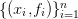
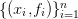
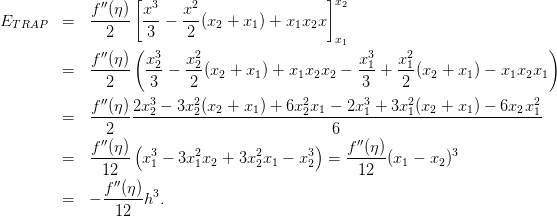
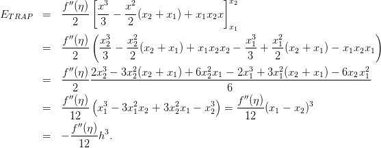
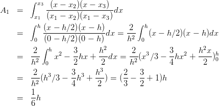
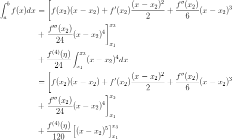

9.1 Regras de Newton-Cotes
O método básico para encontrar as regras de integração consiste
em aproximar a integral de  por uma combinação linear de
por uma combinação linear de  valores1
de
valores1
de  , ou seja,
, ou seja,
Podemos obter os coeficientes  aproximando a função
aproximando a função  pelo polinômio
de Lagrange que interpola , tal que,
pelo polinômio
de Lagrange que interpola , tal que,

 | (9.3) |
Substituindo na integral obtemos
![∫ n [ ∫ ] ∫
b ∑ b b n
a f(x)dx = fi a Li (x)dx + a E LAG(x)dx. (9.4)
i=1](main3434x.png)
A fórmula de quadratura é então
 | (9.5) |
onde
|
| (9.6) |
9.1.1 Somas de Riemann
O método mais simples de aproximar

 por um polinômio constante no
intervalo
por um polinômio constante no
intervalo ![[a,b]](main3439x.png) , ou seja,
, ou seja,  . Se aproximarmos
. Se aproximarmos  pelo ponto a esquerda
do intervalo temos que
pelo ponto a esquerda
do intervalo temos que  e
e  intervalo.
intervalo.
Quando subdividimos ![[a,b]](main3445x.png) em
em  intervalos com tamanho
intervalos com tamanho  nos pontos
nos pontos  , em cada intervalo
, em cada intervalo  aproximamos a área
por
aproximamos a área
por


Podemos obter uma fórmula similar se usarmos os pontos a direita do intervalo, ou seja, as somas de Riemann à direita

Uma terceira opção é utilizar o ponto médio do intervalo ![[xi,xi+1 ]](main3453x.png) o qual
fornece a regra do ponto médio
o qual
fornece a regra do ponto médio
 | (9.9) |
9.1.2 Regra do Trapézio
A regra do trapézio consiste em aproximar a função  por um polinômio de grau
1. Se utilizarmos uma reta ligando os extremos do intervalo obtemos um trapézio
que fornece o nome da regra.
por um polinômio de grau
1. Se utilizarmos uma reta ligando os extremos do intervalo obtemos um trapézio
que fornece o nome da regra.
Desta forma, utilizando  ,
,  ,
,  e a notação
e a notação
 obtemos através da interpolação de Lagrange o polinômio
obtemos através da interpolação de Lagrange o polinômio
 por e integrando obtemos
por e integrando obtemos de onde obtemos a regra do trapézio dada por
|
| (9.11) |
Erro na regra do trapézio
O erro na regra do trapézio pode ser obtida integrando o erro da interpolação de Lagrange,
 tal que
tal que 
![[ ]
f ′′(η ) x3 x2 x2
ET RAP = ------ ---− --(x2 + x1) + x1x2x
2 ( 3 2 x1 )
f ′′(η ) x32 x22 x31 x21
= ------ ---− ---(x2 + x1 ) + x1x2x2 −---+ ---(x2 + x1 ) − x1x2x1
2 3 2 3 2
f-′′(η-)2x32-−-3x22(x2-+-x1)-+-6x22x1-−-2x31 +-3x21(x2-+-x1-) −-6x2x21
= 2 6
f ′′(η )( ) f ′′(η )
= ------ x31 − 3x21x2 + 3x22x1 − x32 =------(x1 − x2)3
12 12
f′′(η)- 3
= − 12 h .](main3470x.png)
Assim o erro na regra do trapézio é

Exemplo 9.1.1. Use a regra do trapézio para aproximar a integral


Usando o intervalo ![[0,1]](main3474x.png) , temos
, temos  ,
,  e
e  . A regra do
trapézio resulta em
. A regra do
trapézio resulta em

![[0,1∕2]](main3479x.png) e
e ![[1 ∕2,1 ]](main3480x.png) e usando a regra do trapézio em cada
um dos intervalos, temos:
e usando a regra do trapézio em cada
um dos intervalos, temos: 

9.1.3 Regra de Simpson
Na regra de Simpson aproximamos  por um polinômio de grau
por um polinômio de grau  , portanto
precisamos três pontos do intervalo
, portanto
precisamos três pontos do intervalo ![[a,b]](main3485x.png) . Utilizando, por definição,
. Utilizando, por definição,

 , podemos obter o polinômio de Lagrange
, podemos obter o polinômio de Lagrange
 |
Aproximando  por
por  e integrando temos
e integrando temos


Exemplo 9.1.2. Obtenha os coeficientes  do método de Simpson
integrando os polinômios de Lagrange
do método de Simpson
integrando os polinômios de Lagrange  .
.
Fazendo uma translação para a origem (subtraindo  de
de  e
e  )
)


Erro na regra de Simpson
Se usarmos a mesma metodologia da regra dos trapézios, teremos

Considere o polinômio de Taylor em  ,
,

 e integre no intervalo
e integre no intervalo ![[a,b] = [x1,x3]](main3505x.png) :
:
![∫ b [ 2 ′′
f (x )dx = f(x2 )(x − x2 ) + f ′(x2)(x-−-x2) + f--(x2-)(x − x2)3
a 2 6
f′′′(x ) ]x3
+ -----2-(x − x2 )4
24 x1
1 ∫ x3 (4) 4
+ --- f (ξ(x ))(x − x2) dx,
24 x1](main3506x.png) |
Pelo teorema do valor médio, existe  tal que
tal que
![[
∫ b ′ (x − x2)2 f ′′(x2 ) 3
f (x )dx = f(x2 )(x − x2 ) + f (x2)-------- + -------(x − x2)
a ] 2 6
f-′′′(x2) 4 x3
+ 24 (x − x2)
x1
f(4)(η )∫ x3 4
+ --24--- x (x − x2) dx
[ 1 2 ′′
= f(x )(x − x ) + f ′(x )(x-−-x2) + f--(x2-)(x − x )3
2 2 2 2 6 2
′′′ ]x3
+ f--(x2)(x − x2)4
24 x1
(4) [ ]
+ f---(η-) (x − x2)5 x3
120 x1](main3508x.png) |
Usando o fato que


 , temos
, temos 
 que substitua  e
que substitua  e  com a
seguinte estimativa
com a
seguinte estimativa

Exemplo 9.1.3. Use a regra de Simpson para aproximar a integral


Usando o intervalo ![[0,1]](main3522x.png) , temos
, temos  ,
,  ,
,  e
e  . A
regra de Simpson resulta em
. A
regra de Simpson resulta em

![[0,1∕2]](main3528x.png) e
e ![[1 ∕2,1 ]](main3529x.png) e usando a regra do trapézio em cada
um dos intervalos, temos:
e usando a regra do trapézio em cada
um dos intervalos, temos:

Exercícios
E 9.1.1. Calcule numericamente as seguintes integrais usando os métodos simples do Ponto médio, Trapézio e Simpson. Calcule também o valor exato usando seus conhecimentos de Cálculo I. Complete a tabela abaixo conforme modelo:
| exato | Ponto médio | Trapézio | Simpson | |
 |  |  |  |  |
 | ||||
 | ||||
 | ||||
 | ||||
 | ||||
 | ||||
Resposta.
| exato | Ponto médio | Trapézio | Simpson | |
 |  |  |  |  |
 |  | 0.25 | 0.5 | 0.3333333 |
 |  | 0.125 | 0.5 | 0.25 |
 |  | 0.3894004 | 0.1839397 | 0.3209135 |
 |  | 0.8 | 0.75 | 0.7833333 |
|  |  | 0.4 | 0.25 | 0.35 |
 |  | 0.6666667 | 0.75 | 0.6944444 |
E 9.1.2. Dados os valores da função  ,
,  ,
,  e
e
 , calcule o valor aproximado de
, calcule o valor aproximado de

Resposta. Resp:  ,
,  e
e  .
.
E 9.1.3. Dê a interpretação geométrica dos métodos do ponto médio, trapézio e Simpson. A partir desta construção geométrica, deduza as fórmulas para aproximar

Resposta.

E 9.1.4. Calcule numericamente o valor de  usando os métodos
compostos do ponto médio, trapézio e Simpson. Obtenha os resultados utilizando,
em cada quadratura, o número de pontos indicado.
usando os métodos
compostos do ponto médio, trapézio e Simpson. Obtenha os resultados utilizando,
em cada quadratura, o número de pontos indicado.
| n | Ponto médio | Trapézios | Simpson | |
 | ||||
 | ||||
 | ||||
 | ||||
Resposta.
| n | Ponto médio | Trapézios | Simpson | |
 | 0.1056606 | 0.7503919 | 0.5005225 | |
 | 0.1726140 | 0.3964724 | 0.2784992 | |
 | 0.1973663 | 0.3062023 | 0.2393551 | |
 | 0.2084204 | 0.2721145 | 0.2306618 | |
E 9.1.5. Use as rotinas construídas em aula e calcule numericamente o valor das seguintes integrais usando o método composto dos trapézios para os seguintes números de pontos:
![|-----|--|-----------|-----------|-----------------------|------------1----------|
| n |h |∫01e−4x2dx |∫01--12dx | ∫01x4(1 − x)4dx | ∫01e− x2+1dx |
|-----|--|-----------|---1+x-----|-----------------------|-----------------------|
| 17 | | 0.4409931 | | | |
|-----|--|-----------|-----------|-----------------------|-----------------------|
|-33--|--|-0.4410288--|-----------|-----------------------|-----------------------|
| | | | | | |
|-65--|--|-0.4410377--|-----------|-----------------------|-----------------------|
| | | | | | |
|129--|--|-0.4410400--|-----------|-----------------------|-----------------------|
|257 | | 0.4410405 | | | |
|-----|--|-----------|-----------|-----------------------|-----------------------|
|513 | | 0.4410406 | | | |
|-----|--|-----------|-----------|-----------------------|-----------------------|
|1025 | | 0.4410407 |0.7853981 |1.5873015873016 ⋅ 10−3 |4.6191723776309 ⋅ 10−1|
|-----|---------------------------------------------------------------------------
| |](main3578x.png)
* As versões do livro disponíveis no site podem estar desatualizadas, veja a versão PDF atual no repositório GitHub oficial do projeto.
- IME - UFRGS